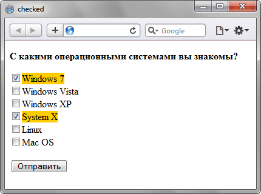

Псевдокласс :checked
Псевдокласс :checked применяется к элементам интерфейса, таким как переключатели (checkbox), флажки (radio) и пункты списка (option), когда они находятся в положение «включено». Переключение элементов в такое состояние происходит с помощью атрибута checked элемента <input> или пользователем.
Синтаксис
Селектор:checked { ... }Примеры использования
input[type="radio"]:checked { ... }Стиль применяется только ко включенным переключателям.
input[type="checkbox"]:checked { ... }Стиль применяется только к помеченным флажкам (чекбоксам).
option:checked { ... }Стиль применяется только к выбранным элементам списка.
Пример
<!DOCTYPE html>
<head>
<meta charset="utf-8">
<title>checked</title>
<style>
input:checked + span {
background: #fc0;
}
</style>
</head>
<body>
<p><strong>С какими операционными системамы вы знакомы?</strong></p>
<p><input type="checkbox" name="a1"><span>Windows 7</span><br>
<input type="checkbox" name="a2"><span>Windows Vista</span><br>
<input type="checkbox" name="a3"><span>Windows XP</span><br>
<input type="checkbox" name="a4"><span>System X</span><br>
<input type="checkbox" name="a5"><span>Linux</span><br>
<input type="checkbox" name="a6"><span>Mac OS</span></p>
<p><input type="submit" value="Отправить"></p>
</body>
</html>В данном примере текст возле отмеченных флажков выделяется фоновым цветом. Результат примера показан на рис. 1.

Рис. 1. Результат использования псевдокласса :checked
Спецификация
| Specification | Status |
|---|---|
| WHATWG HTML Living Standard | Живой стандарт |
| HTML5 | Предлагаемая рекомендация |
| Selectors Level 4 | Рабочий проект |
| CSS Basic User Interface Module Level 3 | Рабочий проект |
| Selectors Level 3 | Рекомендация |
Браузеры
| Internet Explorer | Chrome | Opera | Safari | Firefox |
| 9 | 1 | 9 | 3.1 | 1 |
| Android | Firefox Mobile | Opera Mobile | Safari Mobile |
| 2.1 | 1 | 9.5 | 3.1 |